GelSphereAn Omnidirectional Rolling Vision-Based Tactile Sensor for Online 3D Reconstruction and Normal Force Estimation
IROS 2026 Best Paper Award FinalistRobot Mechanisms and Design
Reconstruction overview
Sensing principle
A soft gel deforms on contact. RGB illumination lets a camera measure that deformation and recover the local surface geometry.
Rolling mechanism
Exploded view
Optical core
A camera, RGB lighting, and battery inside the sensing sphere.
Exploded view
A bearing-supported gel sphere around a magnetically suspended optical module.
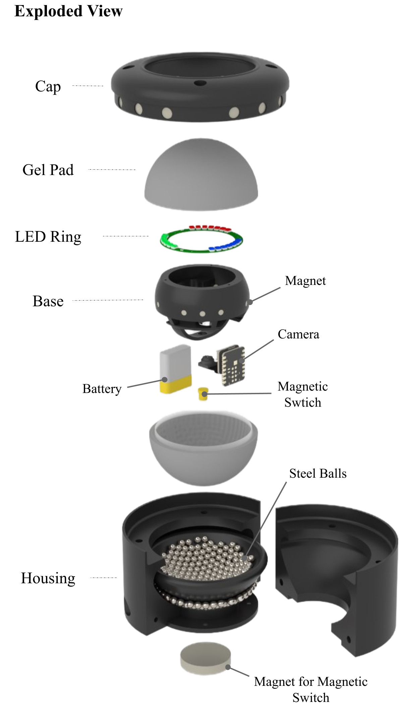
Cross-section
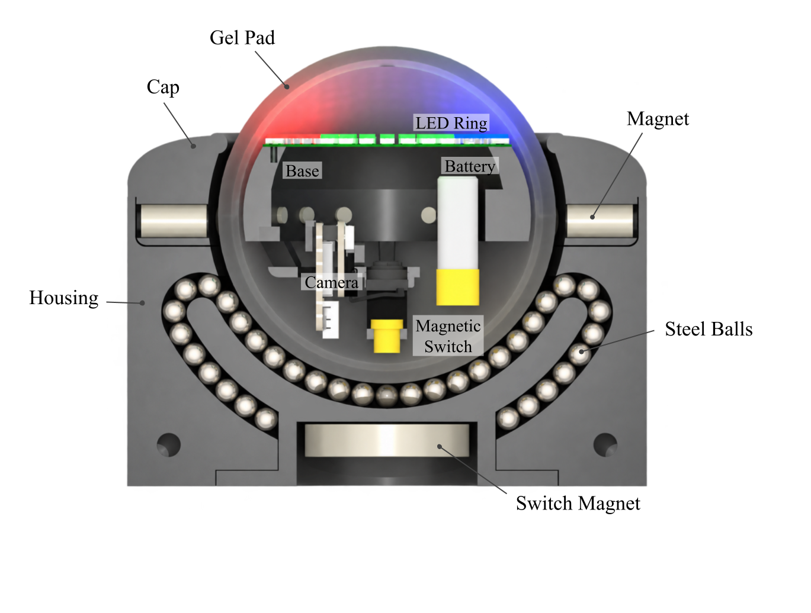
Onboard power. Wi-Fi streaming.
Single-frame
reconstruction
Physical contact, tactile images, and reconstructed geometry across six surfaces.
GelSLAM
From overlapping touches to a continuous 3D surface.
Scan the surface
As GelSphere rolls, each tactile image captures a small area of contact. The red circles show overlapping touches along the scan path.
Continuous reconstruction
Live reconstruction with specular and matte sensors.
Experiments
Single-frame accuracy
A hexagonal indenter, tested at 50 positions on the sensing surface.
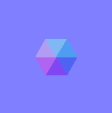
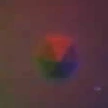
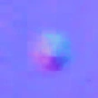
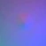
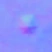
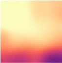
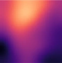
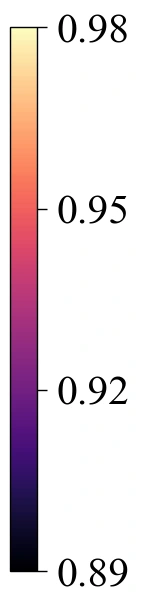
Normal MAE: 0.111 specular · 0.156 matte
Surface reconstruction
A 75 mm feather reconstructed by rolling. Matched landmarks measure drift across the scan.
Angle error
1.3° specular · 2.7° matte
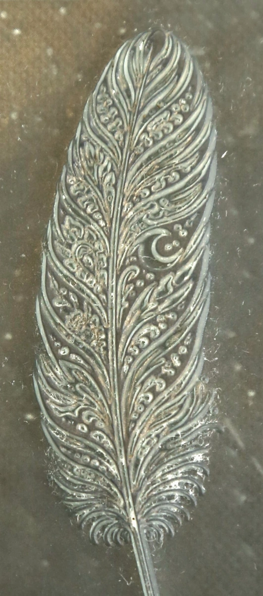
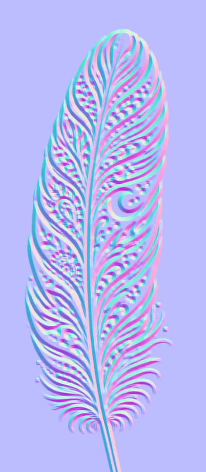
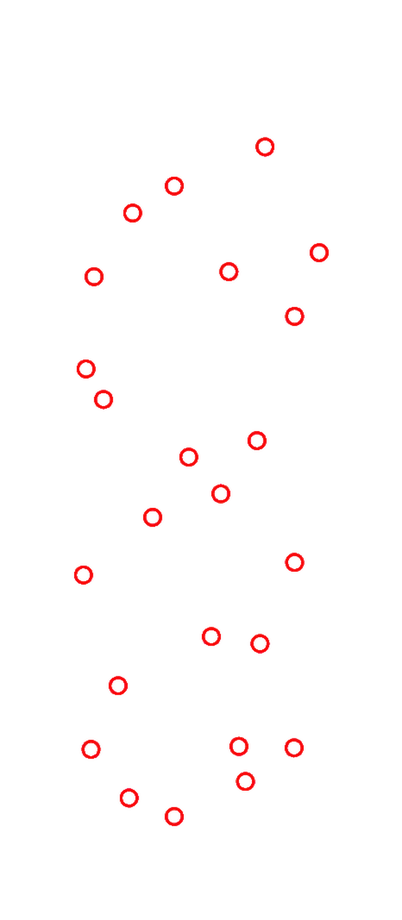
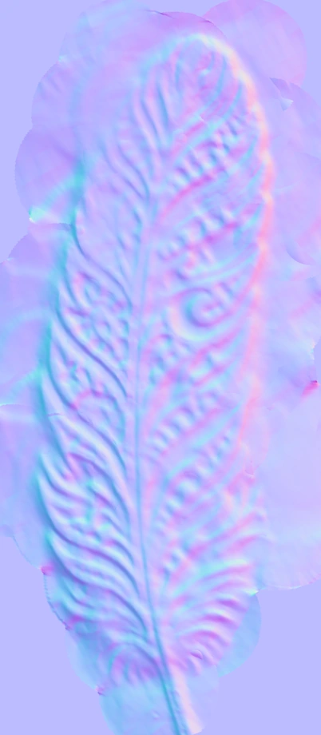
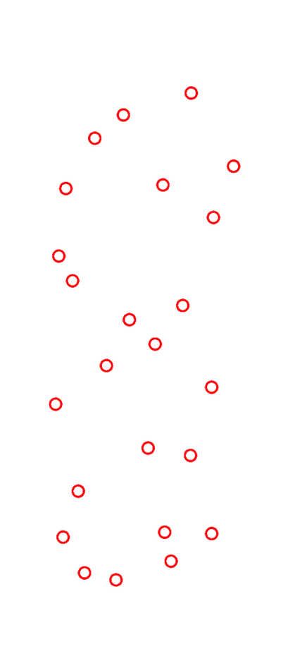
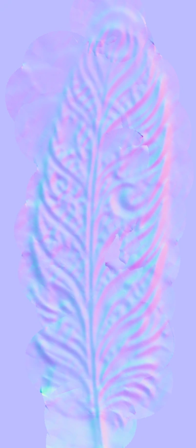
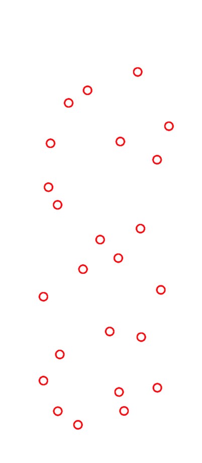
Force from tactile images
Indenter radii: 1, 2, 4, 8, 16, 32, and 64 cm, plus a flat surface. Loads from 1–15 N.
Errors are mean absolute error (MAE). Full results in the paper ↗
Project video
Citation
@inproceedings{gelsphere2026,
title = {GelSphere: An Omnidirectional Rolling
Vision-Based Tactile Sensor for Online 3D
Reconstruction and Normal Force Estimation},
author = {Lee, Seoyeon and Mirzaee, Mohammad Amin
and Yuan, Wenzhen},
booktitle = {IEEE/RSJ International Conference
on Intelligent Robots and Systems (IROS)},
year = {2026}
}